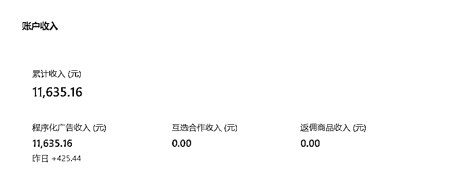
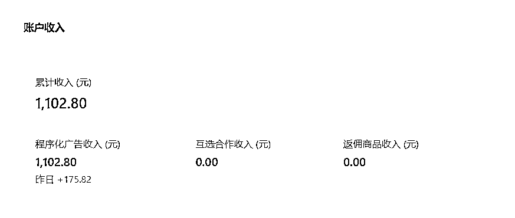

来源：https://oqug8xrurr.feishu.cn/docx/HAFkdRnvaoGGi9xlL06cRnQ1nsg
大家好，我是杨梅，今年4月加入的生财，一直在潜水围观，看到了公众号流量主这个项目，觉得可以躬身下场试试，在7月底注册了2个公众号，开了流量主，9月初才开始项目，10月下旬才开始稳定日更，终于在11月拿到结果！
期间经手了4个号，放弃了2个号，做起来2个，其中1个号30天写出了8篇10w+，单号一个月变现1w+

新号是一周前入池的，也收益1000+了

收入比不上很多大神，做事也比较拖拉，执行力也不如众多圈友，但我的经历，对很多副业小白来说，可能更具有普适性和参考价值。
咱们普通人不求一鸣惊人、一夜暴富，只需日有所进、月有所变、终有所成。
接下来说说我做公众号爆文项目的经历，希望对大家有所启发和帮助
我做公众号爆文的原因也很小白，俗称“跟风”。
就是看到了很多公众号爆文副业项目培训，觉得这说不定是一个风口、红利期，做起来应该比较容易拿到结果，而且项目操作很简单，写文章发布就行，没有什么客服、后端交付等等这些麻烦事。
于是7月初就注册了2个公众号，一个个人号、一个个体号，开通了流量主，准备开始做项目。
结果是，我把事情想得过于简单了，写公众号，写什么领域，写什么内容，怎么写，要写到什么程度，才会有人来看？
这些事当时我统统一窍不通，就这样迷茫了2个月，都没有开始写文章。8月底报名了航海实战，9月初航海开始后，看了一些公众号爆文的航海手册，用AI胡乱写了几篇发布，断断续续地更，没什么阅读，坚持不下去了，就断更了。
当时一口气报名了6条船，结果就是贪多嚼不烂，精力不集中，只能勉强完成打卡，什么结果也没拿到，续航的时候就减少到了2条船。续航续错了，没继续公众号爆文的航海，续的是GPT+自媒体这条船。用AI写的文章在公众号阅读都是0，但放到百家号还有点流量，就误打误撞，继续在百家号上日更AI写的文章，竟然开始有了一点收益，有了正反馈，就有动力继续操作下去，10月份百家号收益2400，持续日更，这个月百家号收益也增加到了4600。
但这些文章内容质量比较差，放在公众号上仍旧没有流量。
事情的转机是在10月份，参加了一期@郭耀天教练的实战打卡营，在实操手册里，一开头就纠正了我的心态，项目是存在不确定性的，有技术成分、也有运气成分，结果与每个人的操作、运气、账号质量有关，坚持打卡日更，不一定能赚到钱，但一定能培养自己的写作表达能力。
于是，我重新找了一个公众号，从最基础的找爆文、拆标题开始，抛弃用AI偷懒的想法（没有说AI不好的意思），手搓写文，进度虽然有点慢，但终于在10月下旬开始能够手搓文章，稳定日更1篇文章，很快，这个新做的账号就入池了。
公众号爆文项目操作流程很简单，简单到就三句话。
第一句话：找对标
第二句话：找对标的爆文仿写
第三句话：坚持日更。
一点也不复杂，具体的操作教程我就不献丑了，大家可以在很多训练营或者小报童里看到实操教程，写得非常详细，我在这里主要是想给小白说几点建议。
首先，项目操作很简单，但赚钱不简单，能赚到钱的人，肯定有自己的一技之长。就拿公众号爆文项目来说，能快速拿到结果的人，大家可以观察一下，不是本来就懂写作的，就是本来就有副业经验的，还有一类是懂得玩AI，剩下的就是运气爆好的。
如果以上你都没有，请用空杯心态，要么老老实实手搓练写作能力，要么从0开始学习如何与AI协作，认认真真把实战操作手册多看几遍，不懂就在实战群里提问，关注自己的文章内容和成长，坚持日更，一定会有收获。
大家记住一句话，看似最笨的方法，才是最好的捷径，后上船者先登岸。
其次，建议新手小白从自己喜欢看、喜欢写的领域入手，不要跟风所谓的爆款领域。爆款领域确实在某一时期流量很好，但是如果是你自己不擅长、不喜欢的，在你写文能力不强的时候，你根本写不下去，也写不好，数据也不会好，自己也不快乐，何必浪费这个时间呢？
新手最需要关注的不是跟领域，而是跟你自己擅长/喜欢领域的爆文，关注自己的成长，分析研究选题、标题，优化文章内容质量。
最后，忽略一些技巧，关注你的文章内容质量。
大家应该听说过这句话：差生文具多！
刚开始写公众号，没有必要过多关注一些技巧和细节。比如怎么取名、怎么写简介、怎么排版、怎么做引导等等，甚至文章的写作技巧都不用过多去研究
如果你是做公众号流量主的，你只需要把自己的时间、精力放在选题、标题、提升内容质量上面，其他的技巧都是浮云。
你连流量都还没有，文章就只写了几篇，研究这些技巧一点用都没有，因为你没有实战经验，你做的格式排版再漂亮也无法得知这是不是读者喜欢的排版，学的写作技巧也不知道怎么应用，眼睛看会了，脑子却不会。
一个号想入池，一般要坚持日更7-30天，同一个领域坚持日更30天，这30天中不断优化文章质量，仍旧不入池，再更换领域。
AI批量写作的一般是工作室矩阵起号，非常消耗账号，现在平台对文章质量的检测很严格，建议大家还是手搓为主。
我也有过偷懒的时候，仿写爆文没有增加新的信息增量和观点，原创检测大于70%，仍旧被系统识别为抄袭/洗稿，被摘了原创2次，每次被摘原创，流量都断崖式下跌，之前文章也完全不推荐了。
所以，大家千万不要洗稿，仿写的时候，你的文章一定要有新的信息增量，有新观点、新角度。
第二次被摘原创后，我的整个账号都被踢出池了，之前的爆文也一点推荐都没有，幸好我没有放弃，继续日更，又重新入池了。
所以，没有流量的时候，还是先自查一下自己的标题、文章质量，只要你的选题是读者想看的，文章内容质量好，就一定还会入池的。
我的分享就到这里了，希望大家看完之后能得到一些启发。